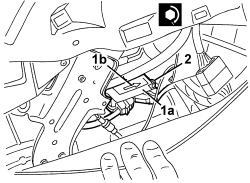

5580C14 AIR BAG ECU - R+R
- Path
- Procedures > 55 ELECTRICAL EQUIPMENT > 5580 SPECIAL ACCESSORIES > 5580C AIR BAG SYSTEM > 5580C14 AIR BAG ECU - R+R
- Kind
- repair procedure (removal / refitting; the operation number is the code)
- Applies to
- all engines; all production periods
- Interactive page
- https://sloeber94.github.io/elrnDB/#/939011090
Applies to: all engines; all production periods
 Removing
Removing
 Refitting
Refitting- Extract the electronic key.
- Disconnect the battery leads and insulate them.
- Wait for 10 minutes before continuing.
For the left and right sides.
Op. 7040A65 CONSOLE SIDE CLOSING (ONE) - R.R.
Op. 5010B70 SIDE CONNECTOR BRACKETS ONE, LH OR RH, BETWEEN AIR CONDITIONER CASING AND DUCT FOR R
1. Disconnect the electrical connections (1a and 1b) for the control unit.
Description | Component |
|---|---|
AIR BAG CONTROL UNIT |
2. Undo the nuts.
3. Remove the control unit.

Applies to: all engines; all production periods
Refitting
Removing- Observe the following precautions.
1. Position the control unit (1a). Make sure that the arrow (1b) on the top of the control unit is facing the direction of travel.
2. Tighten the fixing nuts to the recommended torque.

Applies to: all engines; all production periods
Component | Fastening | dia | Value (daNm) | Validity |
|---|---|---|---|---|
AIR BAG CONTROL UNIT | Nut | M6 | 0.65 ÷ 0.95 |
- Connect the electrical connections.
Op. 5010B70 SIDE CONNECTOR BRACKETS ONE, LH OR RH, BETWEEN AIR CONDITIONER CASING AND DUCT FOR R
Op. 7040A65 CONSOLE SIDE CLOSING (ONE) - R.R.
- Use an Examiner to check that the system has not acquired errors during the operation.
Topics linked from this page (4)
- 5010B70 SIDE CONNECTOR BRACKETS ONE, LH OR RH, BETWEEN AIR CONDITIONER CASING AND DUCT FOR R
- 5580C AIR BAG SYSTEM
- 7040A65 CONSOLE SIDE CLOSING (ONE) - R.R.
- M060 AIR BAG CONTROL UNIT
Topics that link to this page (9)
- K079 PASSENGER AIRBAG DISABLEMENT WARNING LIGHT FLASHING
- K080 AIRBAG FAILURE WARNING LIGHT ON
- K082 PASSENGER AIR BAG DISABLED WARNING LIGHT ON
- E1050 CAN CONNECTION LINES - WIRING DIAGRAM
- E1050 CAN CONNECTION LINES - COMPONENT LOCATION
- E7030 AIR BAG - WIRING DIAGRAM
- E7030 AIR BAG - COMPONENT LOCATION
- E7030 AIR BAG - WIRING DIAGRAM
- E7030 AIR BAG - COMPONENT LOCATION